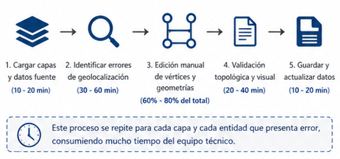

Inaccuracy in geolocation
The geospatial drawings present displacements, topological errors, or inconsistencies with reality.
The updates of geographic information become a bottleneck that affects project deadlines, consuming more hours in repetitive tasks, since generating it manually can create inconsistencies, but in large quantities it becomes difficult to correct.
The geospatial drawings present displacements, topological errors, or inconsistencies with reality.
The correction is carried out vertex by vertex, adjusting geometries, vertices, attributes, and spatial relationships manually.
The manual process is repetitive and tedious, especially in layers with high geometric complexity or large territorial extent.
Delays in the delivery of updated information, reprocessing, and greater operational load for the technical team.

Conectate conmigo en: